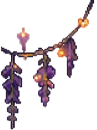
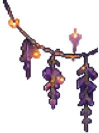
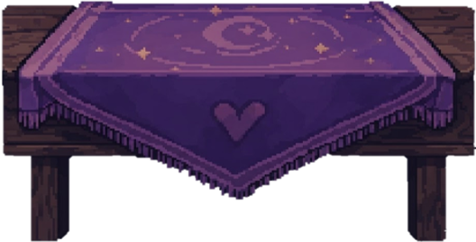
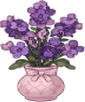
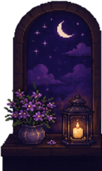
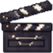

Remembering a beautiful soul.
Not everyone leaves behind monuments. Some leave behind kindness, laughter, and a place people will always call home.


(Asteria / DeerAste)
Known lovingly as
Mowm • Mommy • Aste • Tin • Cath
Friend
Leader
Listener
Safe Place
She wasn't remembered because she wanted to stand out. She was remembered because she made people feel seen.
She had one of the gentlest voices you'd ever hear.
She always listened before giving advice.
She had a quiet way of making people feel safe.
She would fight fiercely for the people she loved.
She never asked to be the center of attention, yet somehow she became home to so many.

Matcha / Coffee
Pistachio
Ilocos Empanada
Red & Violet
BTS
SUGA
Traveling (water sports and historical places)

Western Movies
Music (Western and OPM)
Wordle
The people she loved
Loves to eat (but never gains weight)
TikTok brainrot this year
Eisen
(joke 🤭)
Aries
Soft-spoken (cute voice)
Always listened before giving advice
Loved helping everyone
Made people feel safe
Would fight for the people she loved
Competitive (in a good way)
Funny
KAKAMPINK!
Yells in the car at bad drivers 😂
A good daughter and sister
Kind at heart, strong in spirit
"No temptation has overtaken you except what is common to mankind. And God is faithful; He will not let you be tempted beyond what you can bear. But when you are tempted, He will also provide a way out so that you can endure it."
Thank you for taking the time to remember Tin.
Whether you leave a flower, write a memory, or light a candle, thank you for helping keep her light alive.
This website is more than a collection of pages. It is a place where love continues to be shared, stories continue to be told, and someone deeply cherished continues to be remembered.